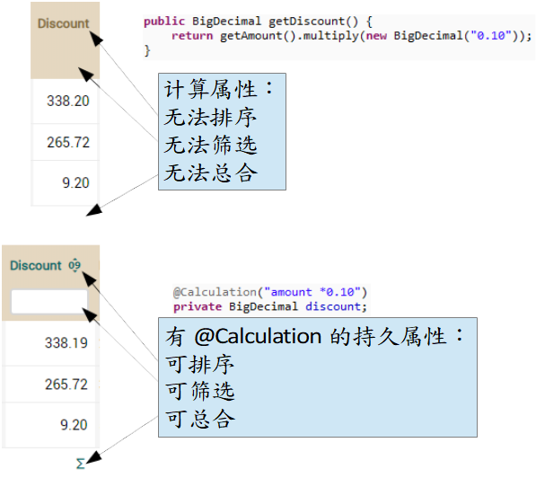

@Calculation 的持久属性
有时计算的属性不是最佳选择。假设您在 Invoice 中有一个计算属性，為折扣（discount）：// 別添加到您的代码，这只是为了说明！
public BigDecimal getDiscount() {
return getAmount().multiply(new BigDecimal("0.10"));
}
// 別添加到您的代码，这只是为了说明！
Query query = getManager().createQuery("from Invoice"); // 查询中没设条件
for (Object o: query.getResultList()) { // 迭代所有对象
Invoice i = (Invoice) o;
if (i.getDiscount() // 查询每个对象
.compareTo(new BigDecimal("1000")) > 0) {
i.doSomething();
}
}
我们的替代方案是使用 @Calculation 注解。 @Calculation 是一个 OpenXava 注解，它允许将一个持久属性和一个计算相关联。您可以使用 @Calculation 定义折扣，如下：
// 别添加到您的代码，这只是为了说明！
@ReadOnly
@Calculation("amount * 0.10")
BigDecimal discount;
@Calculation 属性最有用的地方在于它可以在条件中使用。您可以重写上面的代码，如下：
这个在列表模式中也有影响，因为用户不能在计算属性上进行筛选或排序，但可以在带有 @Calculation 的持久属性上做到这一点：
// 别添加到您的代码，这只是为了说明！
Query query = getManager().createQuery("from Invoice i where i.discount > :discount"); // 可以设条件
query.setParameter("discount", new BigDecimal(1000));
for (Object o: query.getResultList()) { // 仅迭代选定的对象
Invoice i = (Invoice) o;
i.doSomething();
}
这个在列表模式中也有影响，因为用户不能在计算属性上进行筛选或排序，但可以在带有 @Calculation 的持久属性上做到这一点：

@Calculation 在需要筛选和排序时是一个不错的选择，仅一个简单的计算就足够了。不过 @Calculation 其中一个缺点是，只有当用户更改计算器所使用的属性值时，才会重新计算它们的值。因此当您将新的 @Calculation 属性添加到已具有数据的实体时，您必须使用 SQL 更新表中新列的值。另一方面，如果您需要复杂的计算、循环或咨询其他实体，您仍然需要在 getter 中使用以您 Java 逻辑的计算属性。在最后这个情况，如果您需要在列表模式下对计算属性进行排序和筛选，则可以选择同时拥有计算属性和持久属性，并使用 JPA 回调方法同步它们的值（我们将在以后的课程看到回调方法）。
我们想在 Order 和 Invoice 中添加一些金额（总额）。增值税率、增值税、鏓合和合计缺一不可。为此，您只需在 CommercialDocument 类添加一些属性。下图显示了这些属性的用户界面：

將以下代碼添加到 CommercialDocument 中：
@Digits(integer=2, fraction=0) // 指定其长度
BigDecimal vatPercentage;
@ReadOnly
@Money
@Calculation("sum(details.amount) * vatPercentage / 100")
BigDecimal vat;
@ReadOnly
@Money
@Calculation("sum(details.amount) + vat")
BigDecimal totalAmount;
请注意我们是为何在 vat 跟 totalAmount 选择持久属性（@Calculation + @ReadOnly）而不是计算属性，这是因为这些算法很简单，并且对它们进行筛选和排序。另外，您可以在@Calculation 中看到如何使用 sum(details.amount) 来引用集合详细信息中金额列（总额列）的总和，这样我们就不需要 baseAmount 属性。另一方面，vatPercentage 是一个传统的持久属性，我们使用 @Digits（来自 Bean Validation 的注解，Java 基准验证）作为 @Column 的替代品来指定其大小。
现在您已经编写了 CommercialDocument 中的金额属性，就必须修改 detail 集合的属性列表, 来显示 CommercialDocument 的 the total properties（发票和订单）。让我们来看看：
abstract public class CommercialDocument extends Identifiable {
@ElementCollection
@ListProperties(
"product.number, product.description, quantity, pricePerUnit, " +
"amount+[" +
"commercialDocument.vatPercentage," +
"commercialDocument.vat," +
"commercialDocument.totalAmount" +
"]"
)
private Collection<Detail> details;
...
}
现在您可以在应用程序试试它。应该要与本章开头的图几乎一样。 “几乎”是因为 vatPercentage 还没有默认值。我们将在下一节中添加它。